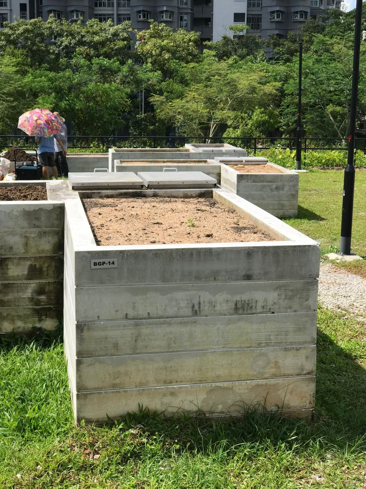
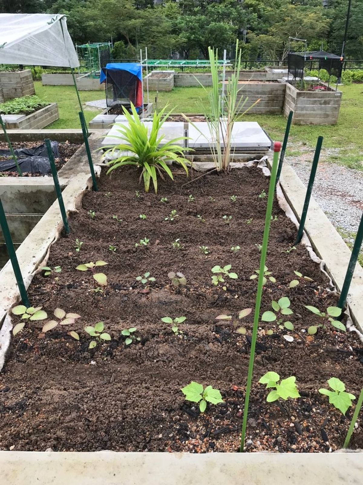
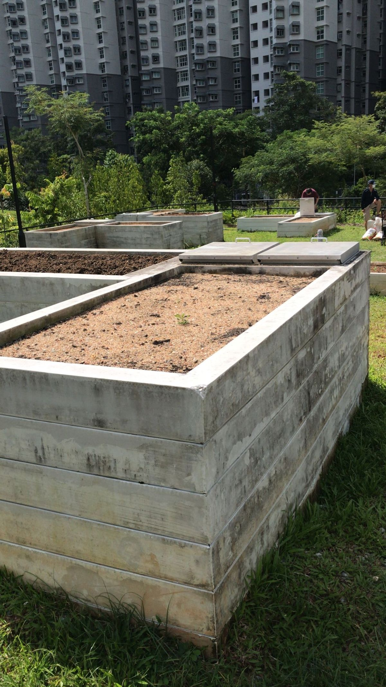
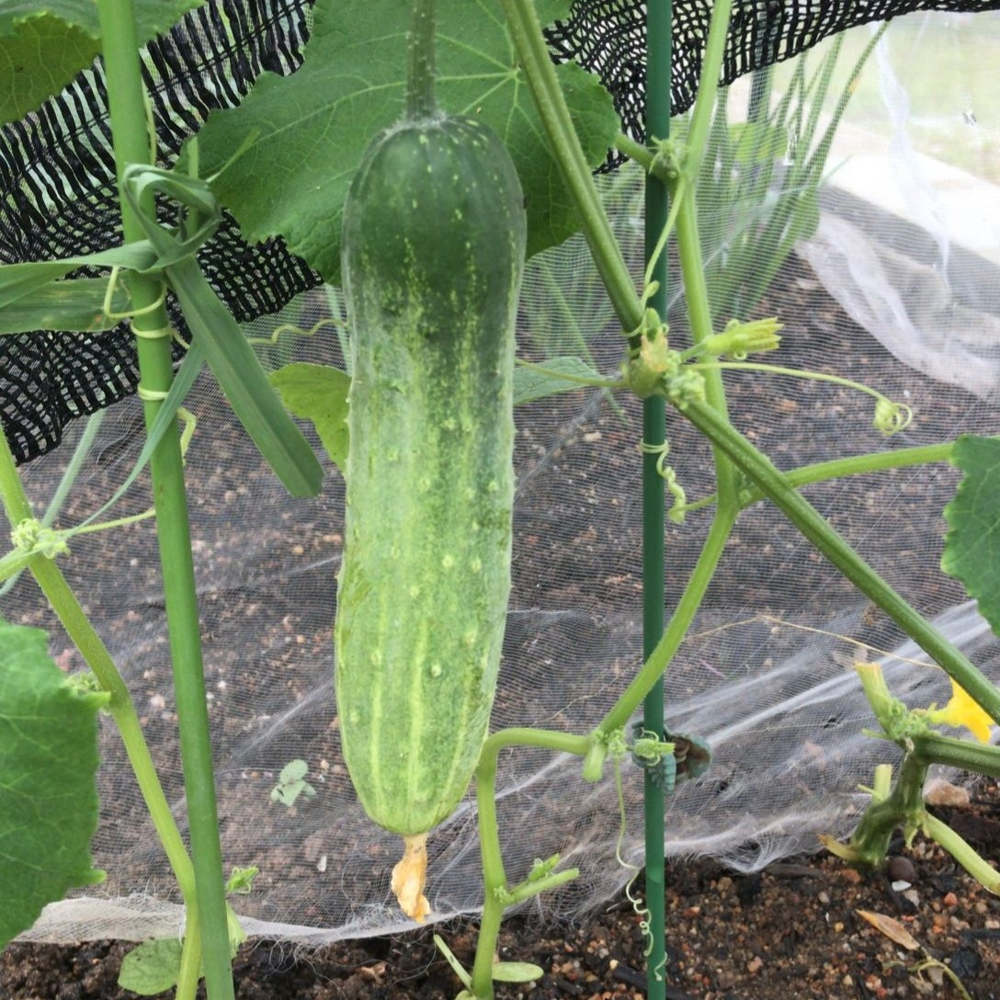
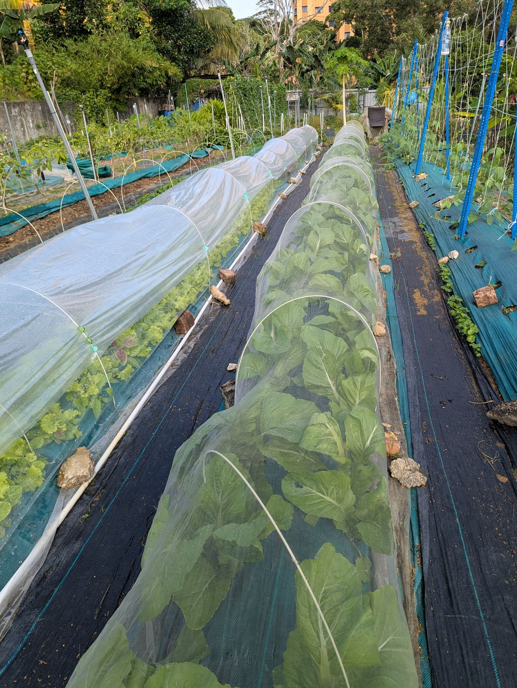
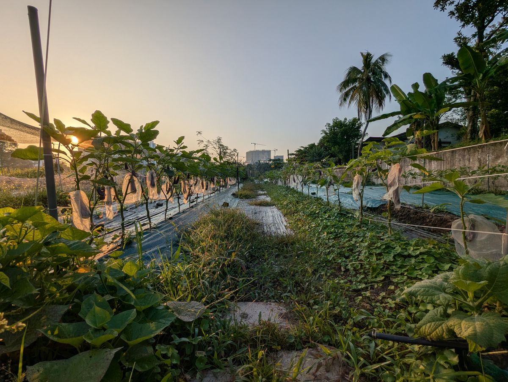
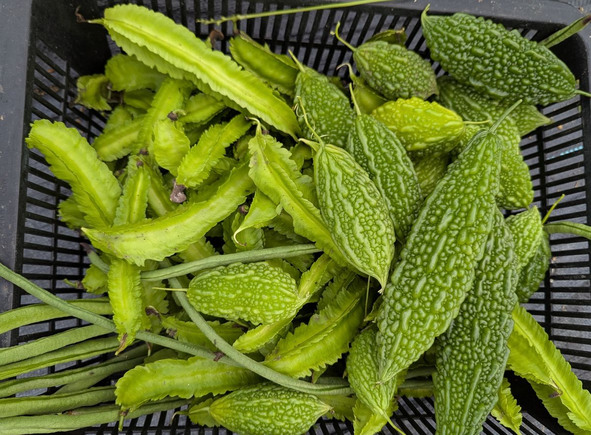
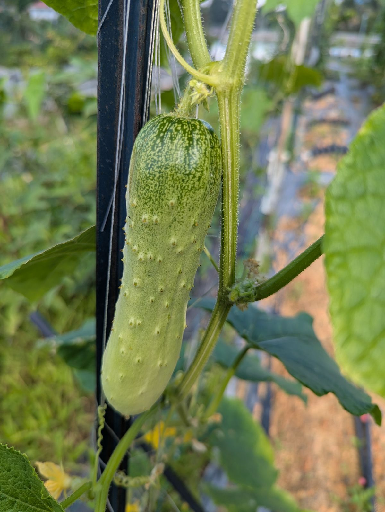
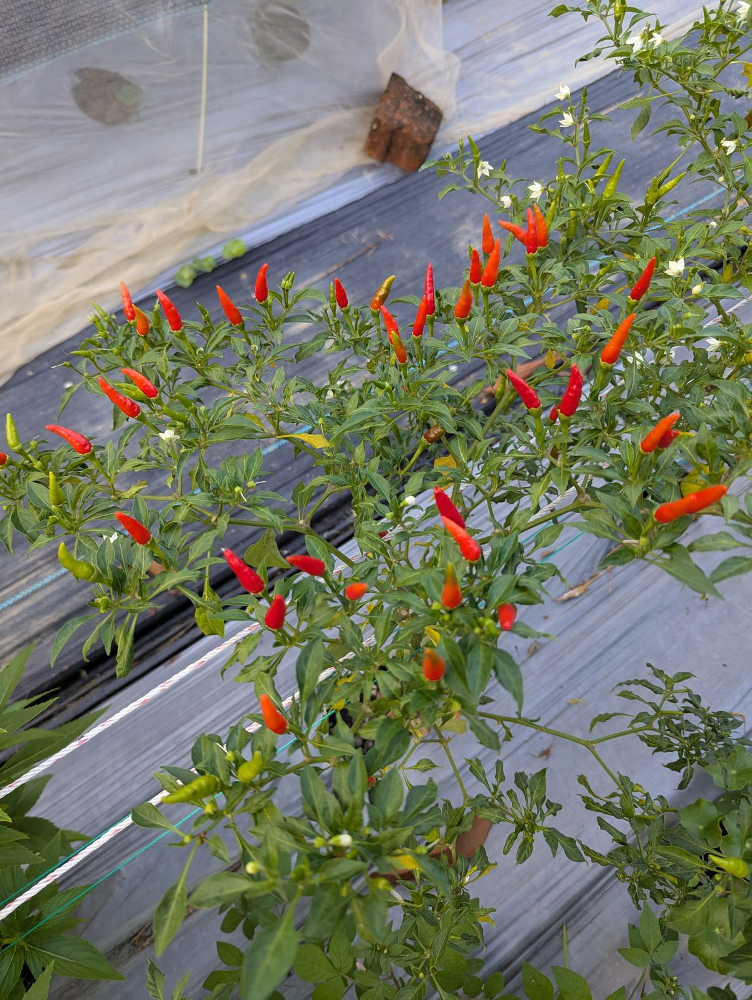
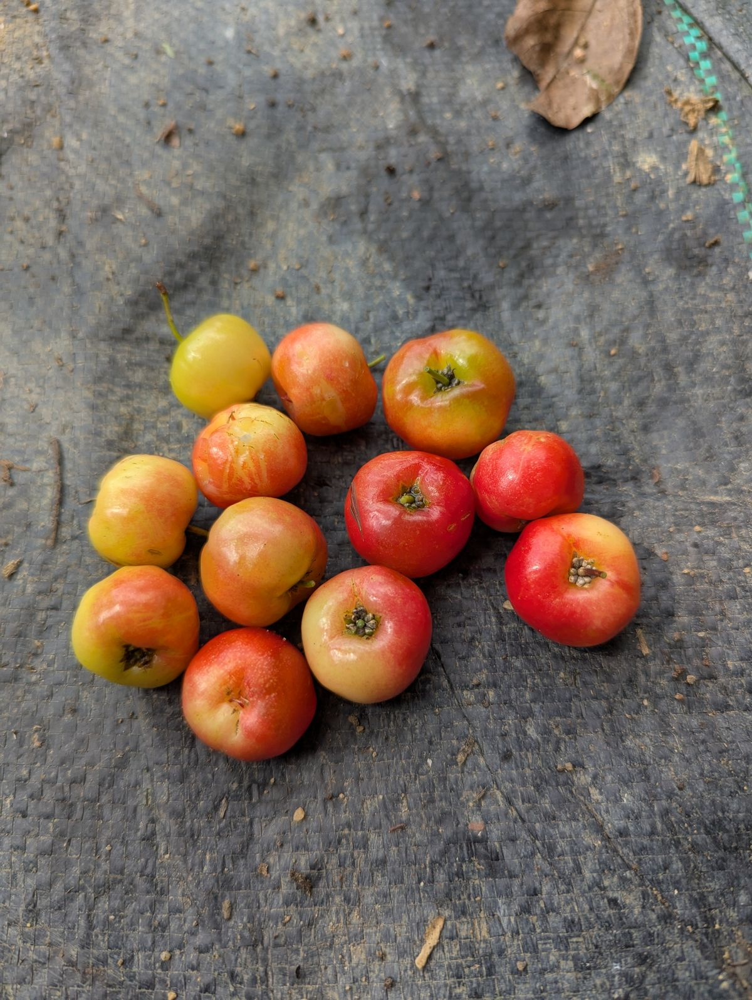

From a small community plot to a thriving urban farm in the heart of Johor Bahru.
← Back to HomeGreens N Berries started off as a humble gardening plot under NParks at Bukit Gombak. What began as a weekend hobby — planting a few vegetables, learning about soil health, and sharing harvests with neighbours — slowly grew into something bigger.
As interest in self-sustainability deepened, so did the vision. The small plot at Bukit Gombak was no longer enough to grow the range of crops we dreamed of, or to supply the growing circle of friends and family who wanted access to clean, pesticide-free produce.
Our belief: Everyone deserves access to food that's grown without chemicals, with respect for the land and the people who tend it.
In search of more space and a permanent home, we acquired a half-acre plot right in the centre of Johor Bahru — just five minutes from Paradigm Mall. The central location means we can serve the community with truly local, hyper-fresh produce while keeping food miles to a minimum.
Today, the farm is home to dozens of crops — from winged beans and long beans to pumpkin, sweet potato, ginger, and even pineapple. Every plant is grown without pesticides, following sustainable practices that nurture the soil and the ecosystem.
Started as a small NParks gardening plot. Learning the basics of growing food in a community garden setting.
The plot sparked a deeper passion for self-sustainability and pesticide-free growing. The vision for a proper farm took shape.
Acquired half an acre in central JB, minutes from Paradigm Mall. Greens N Berries JoyAcre was born.
Growing 30+ crops, building soil health, sharing harvests, and proving that urban farming can feed a community sustainably.
Photos from the early days at Bukit Gombak before the move to Johor Bahru.




Fresh produce grown at our JoyAcre farm in Johor Bahru — pesticide-free, picked at peak ripeness.






We're located at Greens N' Berries JoyAcre, just off the main road in Johor Bahru. Whether you want to buy fresh produce, learn about growing your own food, or simply see what urban farming looks like — you're always welcome.
← Back to Home